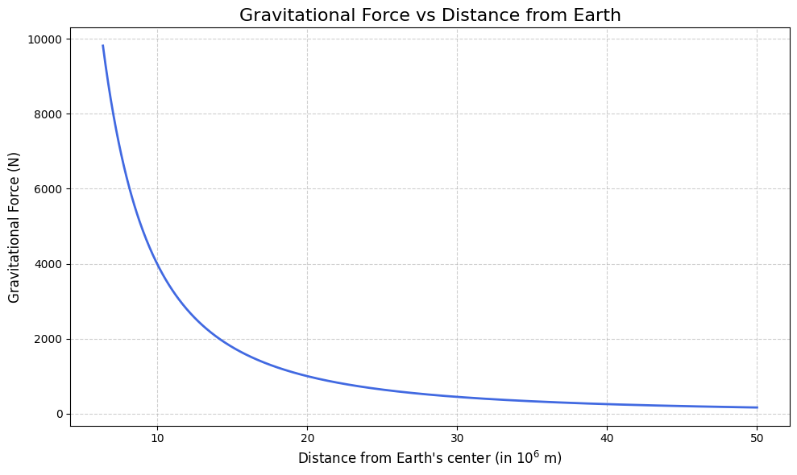
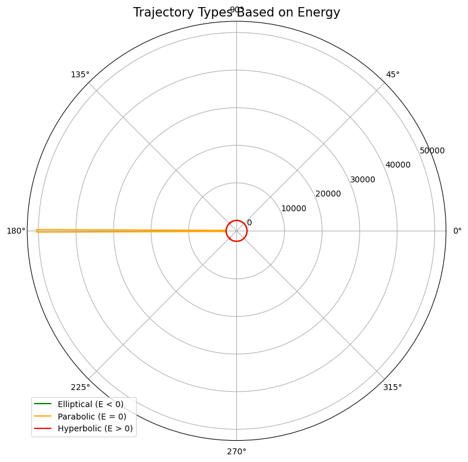
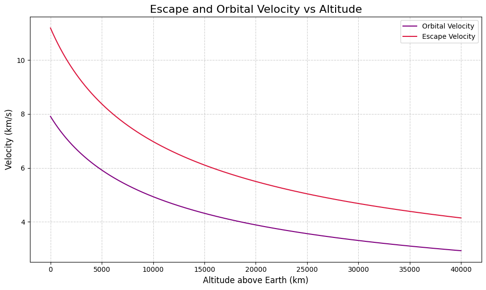
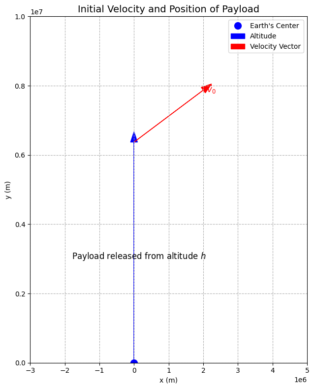
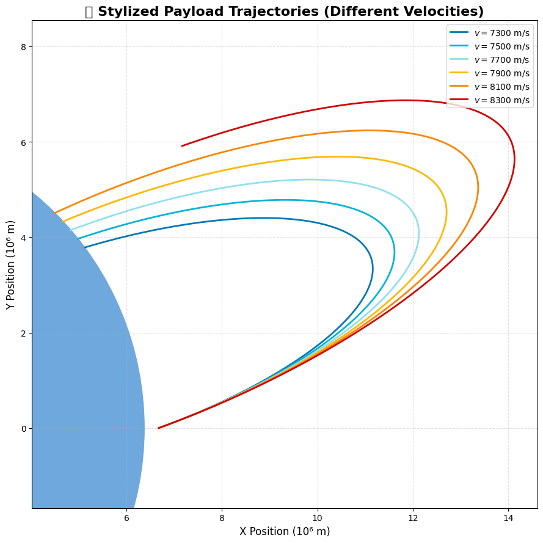
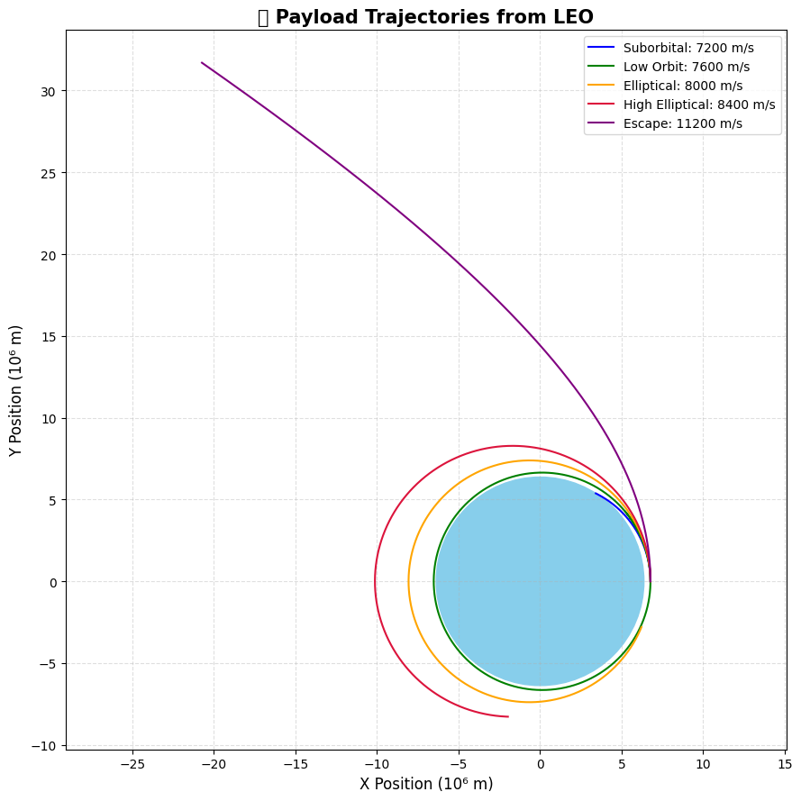

Problem 3
🚀 Problem 3: Trajectories of a Freely Released Payload Near Earth
🔍 Understanding the Physics Concepts
⚖️ Newton’s Law of Universal Gravitation
- The gravitational force \(F\) between two masses is given by:
where:
- \(G \approx 6.674 \times 10^{-11}~\text{N}\cdot\text{m}^2/\text{kg}^2\) is the gravitational constant
- \(m_1\) and \(m_2\) are the masses
- \(r\) is the distance between the centers of the two masses
- For a small object (payload) near Earth:
where \(M_{\oplus}\) is Earth's mass, \(m\) is the payload mass, and \(r\) is the distance from Earth's center.
🌌 Types of Trajectories-Visual




The nature of the trajectory depends on the total mechanical energy \(E\):
- Elliptical Orbit: \(E < 0\)
- Parabolic Escape Trajectory: \(E = 0\)
- Hyperbolic Escape Trajectory: \(E > 0\)
Velocity thresholds: - Orbital Velocity (for circular orbit):
- Escape Velocity:
🪐 Kepler's Laws (for Elliptical Orbits)
- First Law (Elliptical Orbits):
-
Planets move in ellipses with the Sun (or central mass) at one focus.
-
Second Law (Equal Areas in Equal Times):
-
A line joining a planet and the Sun sweeps out equal areas in equal intervals of time.
-
Third Law (Harmonic Law):
- The square of the orbital period \(T\) is proportional to the cube of the semi-major axis \(a\):
🧮 Defining the Problem Mathematically
🧭 Variables and Initial Conditions
Let the payload be released from a moving rocket at altitude \(h\). Define:
- \(r_0 = R_{\oplus} + h\): Initial radial distance from Earth's center
- \(\vec{v}_0\): Initial velocity vector of the payload
- \(\theta\): Angle between velocity and local horizontal
- \(m\): Mass of payload (may cancel out in equations)
- \(\vec{r}(t)\): Position vector as a function of time
- \(\vec{v}(t)\): Velocity vector as a function of time
🧭 Equations of Motion under Gravity
Let the acceleration be determined only by gravity (neglecting drag and other forces). The equation of motion is:
- This is a second-order ordinary differential equation (ODE)
- Can be solved numerically using methods like Runge-Kutta
🧾 Summary of Key Constants
- \(G = 6.674 \times 10^{-11}~\text{N}\cdot\text{m}^2/\text{kg}^2\)
- \(M_{\oplus} = 5.972 \times 10^{24}~\text{kg}\)
- \(R_{\oplus} = 6.371 \times 10^6~\text{m}\)
🧮 Chapter 3: Numerical Simulation of Payload Trajectory
🧰 Choose a Numerical Method
To simulate the motion of a payload under Earth's gravity, we need to solve the second-order differential equation:
This is equivalent to solving a system of first-order ODEs by introducing velocity as a separate state:
Let:
- \(\vec{r}(t)\): position vector
- \(\vec{v}(t) = \frac{d\vec{r}}{dt}\): velocity vector
Then:
✅ Method Selection
- Euler’s Method: Simple but inaccurate for orbital simulations.
- Runge-Kutta 4th Order (RK4): Offers a good balance of accuracy and efficiency. Chosen for this simulation.
⏱️ Define Simulation Parameters
We need to define:
- Initial position \(\vec{r}_0\) (depends on altitude \(h\))
- Initial velocity \(\vec{v}_0\) (depends on angle \(\theta\))
- Gravitational constant \(G\) and Earth's mass \(M_{\oplus}\)
- Time step \(\Delta t\)
- Total simulation time \(T\)
🐍 Implementing the Simulation in Python

🎯 Objective:
Simulate and visualize the trajectory of a payload released near Earth using RK4.
✅ Inputs:
- Initial position \(\vec{r}_0\)
- Initial velocity \(\vec{v}_0\)
- Release angle \(\theta\)
- Altitude \(h\)
- Time step \(\Delta t\)
📦 Output:
- Time-evolving position vectors \(\vec{r}(t)\)
- A 2D trajectory plot in space
import numpy as np
import matplotlib.pyplot as plt
# Constants
G = 6.67430e-11 # Gravitational constant (m³/kg/s²)
M = 5.972e24 # Earth mass (kg)
R_earth = 6.371e6 # Earth radius (m)
# Simulation setup
altitude = 300e3 # Initial altitude (m)
r0 = np.array([R_earth + altitude, 0]) # Initial position (m)
angles = [0] # Straight launch
velocities = [7300, 7500, 7700, 7900, 8100, 8300] # Different speeds (m/s)
dt = 1.5 # Time step (s)
T = 5500 # Total simulation time (s)
steps = int(T / dt)
# Define acceleration under gravity
def acceleration(pos):
r = np.linalg.norm(pos)
return -G * M * pos / r**3
# RK4 integrator
def rk4_orbit(r0, v0):
r = np.zeros((steps, 2))
v = np.zeros((steps, 2))
r[0], v[0] = r0, v0
for i in range(steps - 1):
k1v = acceleration(r[i])
k1r = v[i]
k2v = acceleration(r[i] + 0.5 * dt * k1r)
k2r = v[i] + 0.5 * dt * k1v
k3v = acceleration(r[i] + 0.5 * dt * k2r)
k3r = v[i] + 0.5 * dt * k2v
k4v = acceleration(r[i] + dt * k3r)
k4r = v[i] + dt * k3v
r[i+1] = r[i] + dt/6 * (k1r + 2*k2r + 2*k3r + k4r)
v[i+1] = v[i] + dt/6 * (k1v + 2*k2v + 2*k3v + k4v)
if np.linalg.norm(r[i+1]) < R_earth:
r = r[:i+2] # Stop at impact
break
return r
# Plotting
plt.figure(figsize=(9, 9))
colors = ['#0077b6', '#00b4d8', '#90e0ef', '#ffb703', '#fb8500', '#d00000']
for v_mag, color in zip(velocities, colors):
angle = np.radians(20) # slight angle
v0 = v_mag * np.array([np.cos(angle), np.sin(angle)])
trajectory = rk4_orbit(r0, v0)
plt.plot(trajectory[:, 0] / 1e6, trajectory[:, 1] / 1e6,
label=f'$v = {v_mag}$ m/s', linewidth=2.0, color=color)
# Draw Earth
earth = plt.Circle((0, 0), R_earth / 1e6, color='#6fa8dc', zorder=0)
plt.gca().add_artist(earth)
# Style the plot
plt.title("🪐 Stylized Payload Trajectories (Different Velocities)", fontsize=16, weight='bold')
plt.xlabel("X Position (10⁶ m)", fontsize=12)
plt.ylabel("Y Position (10⁶ m)", fontsize=12)
plt.axis('equal')
plt.grid(True, linestyle='--', alpha=0.4)
plt.legend(loc='upper right', fontsize=10)
plt.tight_layout()
plt.show()
🚀 Visualizing and Analyzing Payload Trajectories
This section presents the visual and analytical interpretation of simulated trajectories for payloads released near Earth under the influence of gravity.
🎯 Objectives
- 📈 Plot and analyze 2D trajectories of payloads.
- 🌀 Classify orbits: elliptical, hyperbolic, and suborbital.
- 💡 Highlight critical velocities like orbital and escape velocity.
- 🧠 Draw practical conclusions for space missions (e.g., reentry, orbital insertion).
📊 Visualizing the Results
✳️ Key Quantities
- Orbital velocity at low Earth orbit: $$ v_{orbital} = \sqrt{\frac{GM}{R + h}} $$
- Escape velocity from the same altitude: $$ v_{escape} = \sqrt{\frac{2GM}{R + h}} $$
Where: - \(G\) = gravitational constant, - \(M\) = mass of Earth, - \(R\) = radius of Earth, - \(h\) = altitude of payload.
📐 Trajectory Types
- Bound orbits: Elliptical paths where \(E < 0\).
- Escape trajectories: Hyperbolic paths where \(E > 0\).
- Reentry/Suborbital: Short arcs falling back to Earth.
🔧 Plotting in Python (2D Example)

import numpy as np
import matplotlib.pyplot as plt
# Constants
G = 6.67430e-11
M = 5.972e24
R_earth = 6.371e6
altitude = 400e3
r0 = np.array([R_earth + altitude, 0])
dt = 1.5
T = 6000
steps = int(T / dt)
# Function: Gravitational acceleration
def gravity(pos):
r = np.linalg.norm(pos)
return -G * M * pos / r**3
# RK4 Integrator
def rk4(r0, v0):
r = np.zeros((steps, 2))
v = np.zeros((steps, 2))
r[0], v[0] = r0, v0
for i in range(steps - 1):
k1v = gravity(r[i])
k1r = v[i]
k2v = gravity(r[i] + 0.5 * dt * k1r)
k2r = v[i] + 0.5 * dt * k1v
k3v = gravity(r[i] + 0.5 * dt * k2r)
k3r = v[i] + 0.5 * dt * k2v
k4v = gravity(r[i] + dt * k3r)
k4r = v[i] + dt * k3v
r[i+1] = r[i] + dt/6 * (k1r + 2*k2r + 2*k3r + k4r)
v[i+1] = v[i] + dt/6 * (k1v + 2*k2v + 2*k3v + k4v)
if np.linalg.norm(r[i+1]) < R_earth:
return r[:i+2]
return r
# Simulation
velocities = [7200, 7600, 8000, 8400, 11200] # m/s
colors = ['blue', 'green', 'orange', 'crimson', 'purple']
labels = ['Suborbital', 'Low Orbit', 'Elliptical', 'High Elliptical', 'Escape']
plt.figure(figsize=(9, 9))
for v_mag, color, label in zip(velocities, colors, labels):
v0 = v_mag * np.array([0, 1])
path = rk4(r0, v0)
plt.plot(path[:, 0]/1e6, path[:, 1]/1e6, label=f'{label}: {v_mag} m/s', color=color)
# Draw Earth
earth = plt.Circle((0, 0), R_earth / 1e6, color='skyblue', zorder=0)
plt.gca().add_artist(earth)
# Plot styling
plt.title("🔭 Payload Trajectories from LEO", fontsize=15, weight='bold')
plt.xlabel("X Position (10⁶ m)", fontsize=12)
plt.ylabel("Y Position (10⁶ m)", fontsize=12)
plt.axis('equal')
plt.grid(True, linestyle='--', alpha=0.4)
plt.legend()
plt.tight_layout()
plt.show()